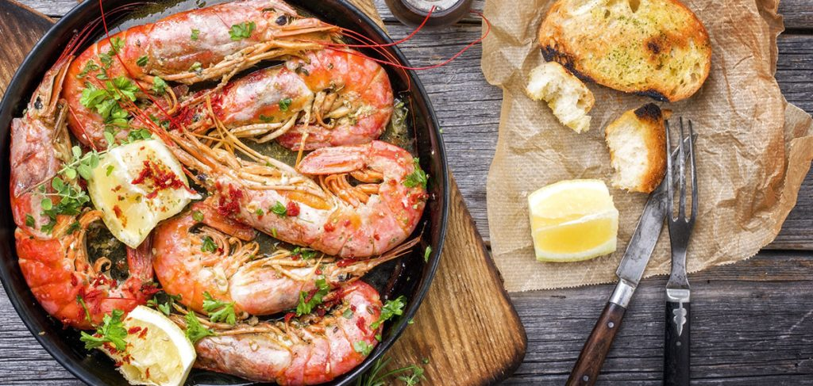

gambas al ajillo | spanish shrimp tapas

poach shrimp in garlicky olive oil, sponge remainders with crusty bread
ingredients
- 1 1/2 pounds deveined large shrimp, tails on
- Kosher salt
- 1/4 cup thinly sliced garlic
- 1 1/4 cups extra-virgin olive oil
- 1 small dried hot red chile, seeded and crumbled
- 1/2 cup minced parsley
- 2 tablespoons lemon juice
- 1 teaspoon finely grated lemon zest
- 1/2 teaspoon smoked paprika
- Crusty bread
instructions
- In a large bowl, toss the shrimp with 1 teaspoon of kosher salt and let stand for 10 minutes.
- Meanwhile, in a 9- to 10-inch enameled cast-iron skillet, combine the garlic and olive oil and cook over moderately low heat, stirring occasionally, until the garlic is very fragrant and just starts to brown, 8 to 10 minutes. Add the chile and cook, stirring, until fragrant, 15 to 30 seconds.
- Add the shrimp to the skillet and cook over moderately low heat, stirring and turning the shrimp occasionally, until barely pink, about 5 minutes. Stir in the parsley, lemon juice, lemon zest, paprika, and a generous pinch of salt. Remove from the heat and let stand until the shrimp are cooked through, 3 to 5 minutes. Serve in the skillet, passing crusty bread at the table.